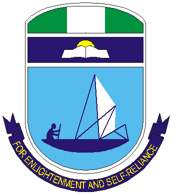
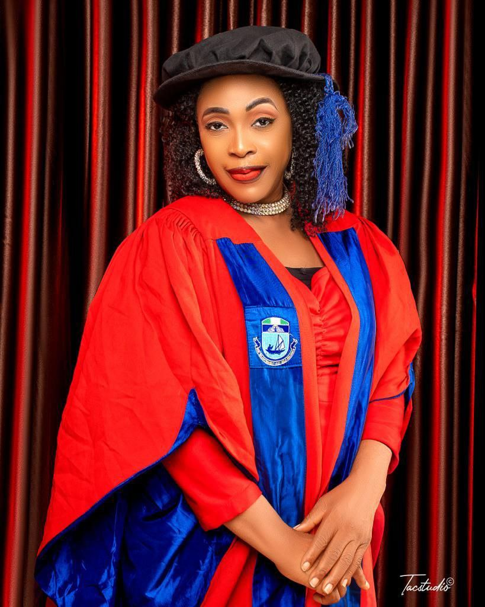

Distinguished Professors,
Esteemed colleagues,
Ladies and Gentlemen.
As our Faculty embarks on this important phase in its leadership journey, I humbly present myself for service for
the position of Substantive Dean. I do so with deep gratitude, sincere humility, and a strong sense of
responsibility to the academic community we have collectively built and continue to nurture. This Faculty is not
just an academic structure to me; it is our shared journey and a living story of shared vision, effort, and growth.
It is a Faculty born of vision, sustained by sacrifice, strengthened by our shared commitment and I come forward,
ready to serve, to consolidate our progress, and lead us purposefully into the next phase of growth and excellence.
I do not seek office for status, but for stewardship- to protect what we have built and to guide it with care,
fairness, and integrity. At this critical stage, our New Faculty does not need experimentation, but a steady and
committed leadership- leadership that understands our roots and is deeply committed to our future. I shall,
therefore, offer not just experience, but tested commitment within this very system we all serve. I have walked this
journey from its formative stage, and I understand both its history and its promise.
Before I outline my manifesto, permit me to briefly revisit a defining moment in our history – the evolution of our
Faculty from the Faculty of Humanities to the newly established Faculty of Communication and Media Studies. This
transition was not merely a change of name; it marked a significant turning point in our academic evolution
signaling the emergence of a distinct intellectual identity, an acknowledgement of the vital role our disciplines
play in a rapidly evolving world. It is against this backdrop of transformation that I offer myself for election as
the Substantive Dean of our Faculty. I do so not out of personal ambition, but from a profound sense of duty- to
preserve the legacy we have built and to advance it into a Faculty that is dynamic, relevant, and second to none.
Our Journey, Our Struggle, Our Triumph: The Birth of Our New Faculty
Dear colleagues, I stand before you, today, not as someone just beginning a journey, but as one who has walked
through this journey with you from the very beginning — from the moment of the unbundling of Mass Communication in
Nigeria in the year 2020 to where we proudly stand today. I have seen our humble beginnings, shared in our
struggles, and witnessed, firsthand, the effort, sacrifice, and vision that brought us this far. For this reason, I
am not here to make grand promises, but to seek the opportunity to consolidate the work we have already begun
together and strengthen the foundations we have laid for the growth of our dear Faculty. Having witnessed our
beginnings, I know what it will take to lead. I, therefore, humbly seek your support and your vote, so that
together, we can continue this journey and secure even stronger future for our New Faculty.
Many of us will recall that moment when the University’s Senate held its meeting on 29th January 2020 and approved
the first stage of the unbundling of Mass Communication in Nigeria and directed that the Department of Linguistics
and Communication Studies should work out modalities for the transition of the Communication component of the
department to a Faculty status in line with NUC directive. Following this news, uncertainty filled the air. Some of
us who are seated here today came to my office immediately after that Senate’s meeting and asked me, “What do we do
now that the University’s Senate has directed the Department of Linguistics and Communication Studies to work out
modalities for a full-fledged Faculty of Communication and Media Studies?”
There were doubts;
There were questions;
There were expectations;
There was uncertainty, and
There was also conviction.
And in the midst of it all, there was a pressing need – indeed, an urgent call for credible, committed leadership to
drive the vision and give direction to our collective aspirations. I stepped forward and offered to lead the
struggle for the demerger. Together, we rose to the challenge. Our first step was to inform and seek the advice of
the then Dean of the Faculty of Humanities, Professor Femi O. Shaka - one of the pioneer Professors of Film Studies
in Nigeria, who had since laboured and advocated for the emergence of Film Production as an academic field in
Nigerian universities. Professor Shaka welcomed the development warmly and expressed his full support for it. He
further encouraged us to proceed confidently with its implementation, assuring us of his cooperation, goodwill, and
readiness to contribute in any way necessary to ensure its success.
Following the Senate’s directive, the then Ag. Head of the Department of Linguistics and Communication Studies made
haste to set up a Committee - The Committee for the Establishment of the New Faculty, which I chaired to respond to
the directive. The Committee used the academic programme of NUC for the Faculty of Communication and Media Studies
and recommended five departments initially. This was later pruned down to four departments following unfavourable
reactions by the University’s Management on the financial feasibility of establishing five new departments. The
following four departments, thus, emerged: Broadcasting, Film and Multimedia, Journalism and Media Studies, and
Public Relations and Advertising. The Department of Development Communication that was among the initial five
departments proposed was dropped.
The proposal for the establishment of these four new departments in the emerging Faculty of Communication and Media
Studies followed due institutional process. It originated at the departmental level, progressed through the Faculty
channels for consideration and approval, and was ultimately submitted to the Senate Committee on Academic Programmes
and Policies (SCAPP) for deliberation. After due deliberations, the Committee made its recommendations to Senate. At
its 458th meeting held on Wednesday, 7th July, 2021, the Senate of the University of Port Harcourt unanimously
approved the establishment of the New Faculty of Communication and Media Studies. The letter conveying the news of
the approval of the Proposal for the Establishment of the New Faculty was dated 15th July, 2021- a day that remains
memorable and deeply significant, especially to me, as it coincides with my birthday.
Following the effort of the 9th Vice-Chancellor of our University, Professor Owunari Abraham Georgewill, who assumed
office the same Month of July 2021, the Governing Council of the University ratified the earlier approval granted by
Senate for the establishment of the New Faculty on 18th August 2021. This decisive ratification effectively
consolidated and brought final institutional closure to the long-standing process of restructuring, thereby settling
the issue of the demerger of the Communication component from the Linguistics programme, on the one hand, and that
of Film Studies component from Theatre Arts, on the other hand, and, thus, firmly consolidating the establishment of
the New Faculty of Communication and Media Studies.
It should be recalled that as the Chairman of the New Faculty Committee, I was entrusted with the responsibility of
driving the process that eventually led to the birth of our Faculty. In that capacity, I painstakingly prepared the
modalities, proposals for various departments, and compiled the required documentation for submission to the
appropriate statutory bodies, including SCAPP and the Senate. However, this achievement was not mine alone. It was a
collective effort - indeed a shared victory. I ensured that every document passed through the then Ag. Head of
Department of LCS, who worked in close cooperation with the Committee I chaired. The Ag. HOD actually gave his full
support throughout the period of the unbundling. Support also came from multiple quartres. Our pioneer interim Dean,
who had initiated the process of the demerger even while on Sabbatical provided critical information and made
himself available whenever his input or physical presence was required. Our distinguished Professors also made
valuable intellectual contributions that strengthened the proposals and enriched the process. In addition, several
other colleagues contributed in various ways - some by providing essential information, encouragement, and sustained
prayers for the successful birth of the New Faculty, while a few others who though not overtly, but indirectly,
worked against the demerger process at various stages.
During that period, my role extended beyond the intellectual and administrative coordination of the process to
include the financial responsibility for its execution. I personally shouldered the costs associated with the
preparation, production and processing of the extensive documentation required for the various stages of approval.
It is important to note that apart from the modest sum of N17, 000 contributed by the then Acting Head of Department
from the departmental purse, no member of staff was levied or subjected to any financial obligation in respect of
the demerger (unbundling) process. Indeed, even when Professor Innocent Uwah, the then Acting Head of the Department
of Theatre and Film Studies, suggested that colleagues be asked to contribute, I firmly resisted the proposal in
order to spare staff any financial burden - My intention was simple: To ensure that the process moved forward
without placing unnecessary burden on colleagues, especially at a time when we were not yet certain that the New
Faculty would be approved.
Through persistence, dedication, collective support, and the grace of God, the Faculty of Communication and Media
Studies was eventually established to the glory of God. This New Faculty, it must also be emphasized, did not emerge
by accident. It emerged through my commitment, sacrifice, and our collective effort. I am still committed to lead;
this time, not as the Chairman of the Committee for the establishment of the New Faculty, but as the substantive
Dean of this New Faculty. If you vote for me, it is a vote for consolidation; a vote for continuity, and a vote for
progress.
Securing the Future: The Quest for Faculty Building
Following the approval of the New Faculty, it became clearer that the work was far from completion. The transition
from approval to actual take-off required further initiative, urgency, and strategic follow-through. At that
critical stage, the Secretary to the then Ag. Vice-Chancellor, Professor Steve Okodudu, advised that we should,
without delay, submit an application for a dedicated Faculty building, noting that several emerging faculties were
making similar requests and that early action would be advantageous.
Recognising the urgency of this counsel, I immediately reached out to the then Ag. Head of the Department of
Linguistics and Communication Studies who, though not physically present in Port Harcourt at that time, granted me
the necessary approval to proceed on behalf of the department. Acting swiftly, I prepared a formal request and
ensured that it was properly channeled through appropriate administrative procedures to the office of the then Ag.
Vice-Chancellor. Throughout this process, the Secretary remained actively engaged and monitoring the progress of the
application and offering guidance where necessary to ensure that it received due attention. Today, as a result of
sustained collective effort, our Faculty is on the verge of receiving a befitting Faculty Building. This progress
has been further strengthened by the commitment of our out-going interim Dean, who upon request from the 9th
Vice-Chancellor, prepared and submitted a comprehensive building plan. The current Vice-Chancellor having inherited
the earlier request took it upon himself and went on to vigorously defend it at the appropriate quatres in Abuja,
thereby bringing us to this hopeful and promising stage.
If entrusted with the mandate to serve as the substantive Dean of our Faculty, I will make this solemn commitment- I
will pursue this vision with the same passion, sacrifice, and dedication that defined my role during the demerger.
This is more than a project to me- it is a collective dream we laboured to birth. I will not rest, I will not waver,
I will not relent; I will not falter; I will not give up until this dream is fully realized- a befitting Faculty
building that will stand as a lasting testament to our resilience, our unity and the shared legacy we are determined
to secure for generations to come. I, therefore, humbly seek your support, and your vote to make this vision a
reality.
Why We Need the Faculty Building: Our Present Reality
While we celebrate progress, we must also acknowledge our present reality.
Not all staff members of our Faculty are currently accommodated in the New TETFUND building assigned to us. Some
colleagues operate from the Elechi Amadi Faculty of Humanities building, others from the Amatu Braide building,
while some are still located in the Old Humanities complex. In addition, several Professors do not yet have
befitting offices. This situation affects morale, productivity, mentorship, and collaboration. Our staff deserve a
professional academic environment that supports scholarship and innovation, and our students deserve a Faculty
environment that reflects the standards of the industries they are preparing to enter. We currently have only two
Lecture Halls, both of which are inadequate for our growing student population. The Faculty lacks essential
facilities such as an Auditorium, Laboratories, Amphitheatre, and a proper Lecture Theatre. Consequently, the
struggle to provide conducive teaching and learning environment continues for us as a Faculty. We need a dedicated
Faculty building to consolidate what we started. This is one of the reasons why I have decided to step forward to
accomplish that mission; this time as the substantive Dean, if elected. A vote for me is a vote for effective
service devoid of ethnic, gender or religious bias. It is a vote for transformation of our dear Faculty; a vote for
excellent research, teaching facilities, and improved welfare for staff and students. These, thus, support the
vision I have for our Faculty- a vision rooted in progress, inclusiveness and shared achievement. It is a vision I
cannot realize alone. I, therefore, humbly appeal for your trust, support, and ultimately your vote, so that
together, we can build the Faculty we all desire and deserve.
My Vision
My vision is to build a strong, visible, professionally respected, and intellectually vibrant Faculty of
Communication and Media Studies that will serve as a reference point nationally and internationally in communication
education, research, and professional practice, offering high quality and standard education that would lead to the
production of communication and media professionals who would advance and utilize such knowledge for service to
humanity.
My Mission
To achieve the above vision, my mission is to consolidate the foundations already laid for the Faculty; pursue and
strengthen academic excellence through quality teaching and scholarly productivity; expand professional
opportunities for both staff and students; provide transparent, inclusive, and progressive leadership that promote
innovation, collaboration, and institutional growth.
Why I Came Out to Lead: Proven Leadership and Institutional Experience
I am a Professor of Language, Communication and Media Studies with over thirty-three years of robust experience in
teaching, research and academic administration. Over the years, I have developed a broad and dynamic expertise,
positioning me to provide purposeful, informed and forward-looking leadership for our Faculty at this pivotal
moment. My expertise spans the fields of language, communication and media studies, communication disorders, and
gender studies, with a strong track record of contributions to advancing knowledge in these fields. I have actively
fostered interdisciplinary collaborations, shaped academic curricula, organized and attended both international and
local conferences, seminars, and symposia.
I have carried out researches on the role of the media in reporting or curbing violence, especially Gender-Based
Violence (GBV), Social and Religious Injustices, Election Violence, Religious Conflicts/Crises, etc. I also
emphasize the use of language, which is a means of communication as a tool for human development and social change,
particularly in promoting fairness, social justice, equality, and equity. It may interest you to know that, though,
I hold the following academic qualifications from our own University of Port Harcourt in Rivers State, Nigeria, I
still see the need to update my knowledge to meet up with the exigencies of time, especially following the
unbundling of Mass Communication in Nigeria:
- 2004 Ph.D. in Lings. & Communication Studies (Semantics of Communication)
- 2011 M.A. in Communication Studies
- 2005 PGD in Communication Studies
- 2002 PGD in Education
- 1996 M.A. in Linguistics and African Languages
- 1990 B.A. in Linguistics
- 1984 (W.A.S.C.) West African School Certificate
My academic journey has been one of deliberate preparation for leadership in the field of Communication and Media
Studies. I was vigorously assessed, interviewed and ultimately elevated to the rank of Professor of Language,
Communication and Media Studies, with effect from 1st October 2015- a recognition that speaks directly to my
expertise, my scholarship and my readiness to lead within this discipline. Significantly, this elevation came even
before the birth of this New Faculty through the unbundling of Mass Communication in 2021, clearly affirming that my
academic profile and contributions were already with the vision we now seek to advance. This is not incidental – it
is deeply instructive. It shows that I have long been prepared, recognized and positioned for this responsibility.
My professional status in Language, Communication and Media Studies is not merely a title; it is a strong validation
of my capacity to lead, innovate and to drive excellence in this Faculty. I, therefore, stand before you not only as
qualified, but as one whose elevation, experience and commitment have uniquely prepared for this moment.
I not only have the prerequisite academic qualification, I also have the required leadership experience to function
as the Dean of our Faculty, if elected. I, therefore, bring not just credentials-but tested leadership, sacrifice,
and results. My leadership roles, coupled with my multidisciplinary knowledge, have equipped me with the skills to
craft impactful policies, spearhead curriculum enhancements, and drive systemic improvements. I am passionate about
leveraging language, communication, and educational principles to facilitate transformative changes that elevate
educational standards and students’ success. I am passionate about staff promotion and welfare; I am passionate
about mentoring younger colleagues, irrespective of gender, ethnicity or religion; I am passionate about moving our
New Faculty forward.
Throughout my 33+ years of teaching and research experience, I have made significant contributions to knowledge by
researching on using language and the media in addressing challenges arising from societal problems, including
researches that reflect my deep commitment, particularly in promoting justice, equality, and equity. I have over 76
publications, authored and co-authored 10 books, founded and edited 3 journals, newspapers and Newsmagazines for my
departments and Associations. I have produced graduates who possess language art skills to solve
communication-related problems. I have supervised over 120 Post Graduate Students and mentored many younger
colleagues, fostering a supportive and innovative academic environment. I mentor younger colleagues and students
through co-authorship, co-teaching, joint project supervision, and serving as students’ adviser. I have served in
various leadership roles, and apart from heading the Departments of Linguistics and Communication Studies and
Journalism and Media Studies, I have also served as Chairman of the Departmental Graduate Committee (in LCS),
Director of a Centre, an Associate Dean of the Faculty of Humanities, and as Secretary of the Graduate School
Scholarship Scheme where many Graduate Students were granted Scholarships. I have convened and co-organized many
conferences, workshops, and symposia, which have Reporting, Gender diversity, Conflict and crisis management, Social
injustices, Communication disorders, and Cultural diversity as focus. Some of my former students—products of my
academic mentorship- are, today, successfully employed, contributing meaningfully to the society having acquired
news gathering, writing, editing and reporting skills for broadcasting, newspaper/magazine production, script
writing, copy-writing, etc.
As a registered and committed member of the following Professional Associations, I continually engage in academic
collaborations and interdisciplinary research that advance the field of communication and media studies. The
following are just some of the Professional bodies I belong to:
Membership of Professional Bodies /Affiliations
- Member, International Communication Association (ICA)
- Member, International Association of Media & Communication Research (IAMCR)
- Member, Nigeria Institute of Public Relations (NIPR)
- Member, African Council for Communication Education (ACCE)
- Member, Association of Communication Scholars & Practitioners (ACSPN)
- Member, Nigeria Union of Journalists (NUJ), University of Port Harcourt Chapel
- Member, Journalism Educators Foundation (JEF), University of Port Harcourt, Nigeria.
Beyond teaching and research, I am deeply committed to advancing scholarship in Communication and Media Studies by
attending conferences. In addition to my membership in various professional bodies, I have participated in national
and international conferences, contributing to discussions on critical communication and media issues such as media
ethics and professionalism, digital media transformation, journalism practice and standards, investigative
reporting, newsroom innovation, media regulation, and the role of journalism in promoting accountability and
informing the public. These efforts reflect my dedication to fostering intellectual exchange, strengthening
professional standards, and promoting the relevance of communication studies in addressing contemporary societal
challenges, which l have consistently addressed through my active participation and contributions at conferences,
especially at the following two conferences among others:
⦁ 14th National Conference of African Council for Communication Education (ACCE), Nigeria Chapter, held at Covenant
University Ota, Ogun State, Nigeria. Theme: Media, Terrorism and Political Communication in a Multicultural
Environment, from 20th - 23rd, September 2011, and
⦁ IAMCR International Conference held in Montreal, Canada. Paper co-presented: Patterns of news reporting on
conflict / politics in the Niger Delta Region in Nigeria, held at the University of Quebec, Montreal, Canada., from
12th – 16th July, 2015.
As one of the presenters at these conferences, I had the opportunity not only to share ideas, but engage deeply with
some of the leading voices in areas such as reporting, conflict management, social justice, terrorism, and political
communication- fields that closely align with my research interests.
To answer the question of why I have chosen to step forward and offer myself for leadership, let me state clearly
that this decision was not borne out of pressure from any individual or a group of colleagues; it is a personal and
deliberate choice. I took time to reflect on my track record, my capability and what I have accomplished in the past
33+ years as a lecturer in this university. On the strength of that reflection, I resolved to present myself before
you and to humbly seek your mandate to serve just as I have served you with commitment and dedication in the pursuit
of the New Faculty. This is because I firmly believe that leadership should not rest solely on promises of what
might be achieved in the future. Rather, it must be grounded on verifiable, demonstrated, and proven achievements in
the past. It is this conviction, anchored in experience, proven service, and a clear vision that has inspired me to
step forward at this time to ask for your mandate to lead as the substantive Dean of the New Faculty.
As I reflect on my journey of 33+ years of service in this university, and on the contributions, I have been
privileged to make along the way, I must confess – deeply and sincerely- that I never imagined that there would come
a time when I would need to catalogue some of my qualifications or achievements simply to prove a point.
I have always believed, and still believe in the quiet dignity of service. My work or help rendered has never been driven
by a desire to be seen or applauded, but by a heartfelt commitment to making a difference- nurturing growth,
supporting and mentoring younger colleagues towards promotion, strengthening our shared purpose, and advancing our
academic community we all hold dear.
For me, the greatest reward has never been in what can be counted or recorded,
but in what we have built together – the lives touched, the standard raised and the enduring legacy we continue to
shape as one. If it were entirely up to me, I would have allowed these contributions to remain where they truly
belong – yes, in the past - quietly embedded as part of a continuous and quiet story of service, woven into our
collective progress. But the demands of this moment, and the responsibility that comes with electoral process, have
made it necessary – though not without reluctance for me to step forward and speak about them. Truthfully, it is not
something I find easy; speaking about my own achievements has never come naturally to me.
That said, permit me a brief heart-felt pause – though it does not come easily – to recount some of my contributions
shaped by years of sacrifice, commitment, and purpose. The journey has been so full and so rich that recounting
everything would demand far more space than this– perhaps even require a handbook of its own or, at least, a very
patient audience. Therefore, with a humble heart and deliberate restraint, I will limit myself to only a few
carefully selected highlights – those that most truly reflect my convictions, labour, and speak directly to this
moment and vision I seek to advance. I will start by highlighting some of my contributions at the departmental
level, where my journey of service first found its expression:
A My Contributions at the Departmental Level: I have had the privilege of serving as Head of Department in two
academic units of this University. The two Units are the:
⦁ Department of Linguistics and Communication Studies (2009-2011) as Ag. Head, and the
⦁ Department of Journalism and Media Studies (2023-2025) as substantive Head of Department.
Phase 1 (Ag. Head, LCS): During my tenure as the Ag. Head of the Department of Linguistics and Communication
Studies, from 2009 to 2011, several notable milestones were achieved. Radio Uniport 88.5 FM, which is now part of
the New Faculty commenced operations immediately I assumed office as the Ag. Head in 2009. After securing a Campus
Radio License from the National Broadcasting Commission (NBC), the first thing I did was to move with urgency and
determination to make our Campus radio functional. I took on the challenging task of building it from the ground up-
beginning with assembling a team capable of driving the vision. With courage and clarity, I approached Treasure FM
98.5 (FRCN), Port Harcourt and secured the release of a seasoned broadcaster, Dr. Samuel Kpenu (now the University
PRO) who became our pioneering Station Manager and laid a solid professional foundation. Determined to get it right,
I drew on strong industry networks to assemble a committed team- two Marketers, two Engineers, and two Technicians-
ensuring seamless round-the-clock transmission. I went further by opening the platform to our students- auditioning,
mentoring and empowering them as presenters, newscasters and on-air- personalities and developed an organogram for
the Radio Station, which guided the station’s operations throughout my tenure as Ag. HOD and Chief-Executive.
Pic. 1 Pioneer Studio Manager & Ag. HOD/Chief-Executive- Radio Uniport 88.5 Unique FM
Together, we gave the station its unique identity through signature tune, engaging programmes, credible news
bulletins, and vibrant content that resonated across the university community. And when continuity was threatened, I
acted. To eliminate any break in transmission, I sourced and acquired a 3KVA diesel generator, capable of powering
our transmitter, air-conditioning units and other essential equipment thereby ensuring seamless and uninterrupted
broadcast operations from our internally generated revenue (Year 1 students’ registration fee) – because failure was
never an option. We did not just establish a radio station- we ignited a voice, built a training ground and created
a legacy that continues to speak till date. It is important to note that the generator I procured remained in
constant use throughout my tenure. Building on this foundation, my persistent advocacy and formal communications
with the university led to the approval of a larger generator, which was subsequently procured by my successor and
installed by the university contractor. Today, the radio station has grown significantly and now enjoys a
sustainable solution to its power challenges. We remain deeply grateful to our dynamic Vice-Chancellor, and
Professor O. Best of Public Health, who visited the Radio Studio on 15th September 2025. We are also grateful to
members of Local Content Initiative, and the Boing Group for their invaluable support.
Pic. 2 VC’s Visit to the Radio Studio in Company of Professor O. Best - Our Benefactor
Beyond overseeing the operations of the University’s Radio Station, I provided sound leadership in the overall
administration of the department. I had the privilege of serving as the Founding Editor of the departmental journal,
titled JOLINCS (Journal of Linguistics and Communication Studies). The journal provided a platform for the
publication of high-quality scholarly articles in Language, Linguistics and Communication Studies. Many lecturers
within the university and beyond published their researches in the journal and these contributions supported their
academic advancement and promotions.
During my tenure, the Department of Linguistics and Communication Studies also secured hosting rights and
successfully, we organized a major academic conference under the auspices of the Linguistic Association of Nigeria
(LAN) from 29th November to 3rd December, 2010. The theme of the Conference was Language, Literature & Communication
in a Dynamic World. I served as the organizer, Chairman of the Local Organizing Committee (LOC) and the Ag. Head of
the Department, and the conference was highly successful.
The LAN Conference significantly enhanced the academic visibility of the Department of Linguistics and Communication
Studies and strengthened national collaboration among scholars. More importantly, the Conference helped to
consolidate the intellectual momentum that later contributed to the autonomy of Communication Studies within the
University. In the long run, the Conference contributed to the emergence of communication as an independent field of
study. During the deliberations, communication scholars and lecturers- while fully participating in and contributing
to the conference, and with a Lead paper on the communication component presented by Prof. Des Wilson – expressed
the view that, although communication has been accommodated within the department of Linguistics and Communication
Studies, the field had grown into a distinct and vibrant discipline and had reached a point where recognition as a
separate and an independent field was not only justified, but inevitable.
The intellectual consciousness generated during that period also contributed to the emergence of the Nigeria Union
of Journalists, Uniport Chapel, which was inaugurated by the then Chairman of Nigeria Union of Journalists, Rivers
State Council on March 4, 2015, with me emerging as the pioneer Vice-Chairman.
The NUJ, University of Port Harcourt Chapel, later evolved into the Journalism Education Forum (JEF). Under JEF, I
served as the Second Editor-in-Chief, where I diligently coordinated its publications up to the 4th edition before
handing over to the incumbent Editor-In-Chef. During my tenure, there was a strategic migration of the journal to an
on-line platform, significantly enhancing its visibility, accessibility and academic reach. The journal itself, in
many respects, experienced one of its most vibrant and impactful phases under my editorship, as I ensured not only
timely production, but also proactive circulation and marketing. Notably, I once deployed proceeds generated from
journal sales to post graduate students to help sponsor a JEF conference, reinforcing our commitment to academic
growth and sustainability.
In addition, I played a pivotal role in the biennial conferences organized by JEF, working closely with the then
Head of the Department as co-organizer. Through our collective efforts, JEF was able to attract significant
sponsorships- running into substantial amount of money– which contributed to the refurbishment of the radio station.
These engagements further strengthened interdisciplinary collaboration and deepened scholarly exchange within and
beyond the university community. For instance, on 20th July 2023, the Faculty visited the Boing Group in Port
Harcourt.
Pic. 3 A Courtesy Visit to the Boing Group led by the Interim Dean of the Faculty s
Under the auspices of JEF, several efforts were made to pursue the demerger of Communication Studies from the
Linguistics discipline. Although those early efforts, especially the Resource Verification Exercise carried out by
our Out-going Interim Dean, Prof. W. Ihejirika, when he was Ag. Head of the Department of Linguistics and
Communication Studies, did not immediately succeed in establishing the New Faculty, they laid important groundwork
for its eventual establishment.
When the approval for the demerger was eventually granted by the Senate of the University, I did not hesitate in
accepting the responsibility of serving as the Chairman of the Committee -- an assignment that culminated in the
successful creation of the New Faculty and remains a defining milestone in the academic development of our
University.
Phase 11 ( Head, JMS): Two years after the establishment of the Department of Journalism and Media Studies following
the unbundling of Mass Communication, I was appointed as a substantive Head of the Department on 23rd November,
2023. As the second Head of the newly created department and the first Head of Department that welcomed the first
set of our students for the 2023/2024 academic session, I first embarked on sensitizing the entire university
community on the creation of the new Department of Journalism and Media Studies. I needed to create such awareness
because many of our UTME prospective candidates and even their parents needed to be aware of the demerger of the
Communication component from Linguistics as a discipline. I did not stop there, I made the Admissions Unit of our
university to be aware of the creation of the New Faculty so as to pass the information to those seeking admission.
Through my effort, at our first admission exercise of 2023/2024 academic session, a total number of 234 students
enrolled as pioneer students of the Journalism and Media Studies programme, and that was the highest in the New
Faculty that year. In the next academic session (2024/2025), the department recorded about 279 intakes, while in the
last admission exercise of 2025/2026 academic session, about 345 students gained admission- again, the highest in
the Faculty and this was made possible through our collective efforts.
Pic. 4 Welcoming our Pioneer students during their Matriculation of 2023/2024 Session
In my effort to make the new programme to survive, I made several attempts to persuade the defunct Department of
Linguistics and Communication Studies to change their name by dropping the communication component from their name,
This involved my serving in one of the Committees created for that purpose, including going to see the 9th
Vice-Chancellor in company of other Professors to take a decision on the matter. The change was eventually effected
during one of the SCAPP meetings I attended as a representative of our New Faculty. That department now bears the
name -The Department of Linguistics and Language Arts. Communication was dropped, thus, saving the name of our New
Faculty. This was another battle we all fought and won. We still hope that ‘Film’ will be dropped from the
Department of Theatre and Film Studies.
To enhance efficiency and proper oversight, I constituted committees to supervise the various arms of the
Departmental Board on assumption of duty as the Head of Department. Some of these Committees included, the:
- Welfare Committee;
- Fund raising Committee;
- Accreditation Committee;
- Examination Committee;
- Research and Publications Committee, and
- Ethics Committee.
The Departmental Board later saw the need to create two more important Committees, especially when it was discovered
that our departmental Handbook has a lot of errors and needed to be reviewed. This realization and the need to
prepare for accreditation gave birth to the following two Committees:
vi. Review of Departmental Handbook Committee, and the
vii. Alumni and Strategic Partnerships Committee
Pic. 5 Dept’l Alumni and Strategic Partnerships Committee receives the Indorama Group
The creation of these two additional Committees, especially the Committee for Hand Book Review was inevitable during
one of our Board meetings convened to allocate courses for 2024/2025 academic session. It was revealed that it was
impossible to continue with the existing Departmental Handbook prepared in line with CCMAS (Core Curriculum and
Minimum Academic Standards). The Handbook was described as grossly inadequate and error-ridden. For instance, some
courses taught in the first semester also appeared in the second semester of the same academic session, with a lot
of errors and inconsistencies. There was absence of some courses that ought to be part of the curriculum, absence of
areas of specialization in our post graduate programmes, and some other gaps identified within the curriculum. All
these and more made the Departmental Board to condemn the Handbook. The implication was that the Handbook was a
‘mess’ and not worth mass-producing for students’ consumption- so, It was not mass-produced.
The Board had to immediately constitute a Committee to come up with a standard Handbook that can be mass-produced.
Unfortunately, this Committee, headed by the pioneer Head of the Department is yet to meet with its Committee
members to strengthen and update the Department’s Handbook produced during his tenure. The department is still
hoping that under the current headship, the Departmental Handbook Committee chaired by the pioneer Head of the
department will rise up to its responsibility to ensure that a comprehensive review of the Handbook is undertaken to
ensure clarity, accuracy and proper alignment with contemporary academic requirements and departmental objectives,
especially in the post graduate programme. It is only then that I can mass-produce for 2023/2024 & 2024/2025
academic sessions that I registered as the then Head of Department.
While some of the above-mentioned Committees constituted by the Board were active and productive, others,
particularly The Ethics Committee, The Departmental Handbook Committee and The Alumni and Strategic Partnership
Committee did not record significant achievements during the period of my headship. The Alumni and Strategic
Partnership Committee, in particular, could not achieve much because it was constituted late (close to
accreditation). The Committee, however, was able to attract the sum of N250, 000 from one of our former students who
is a Navy Captain through its Chairman whose account was used in paying the money. I actually do not consider his
donation as part of my achievements because the chairman of the committee decided to use his personal account for
the donation meant for the department for accreditation. He went a step further to spend the amount in buying some
equipment for our studio without my knowledge as the Head of Department. However, I still wrote an Appreciation
Letter on behalf of the department, as the Head of Department, thanking our generous donor- the Navy Captain.
Pic 6 Dept’l Accreditation Fund raising Sub-Committee receives a Former Student- A
Navy Captain
Apart from forming Committees to drive my mission, I introduced a professional dress code for students: Admitting
students from different backgrounds created a scenario where many of the students did not adhere to the university’s
dress code. Some boys pierced their ears and wore ear rings, some had dreadlocks, wore tattered or ripped jean
trousers, etc. The girls were not left out as some came to class in colourful short dresses and dyed their hair in
very bright colours. What baffled me most was that the majority of them applied to read Law initially, but could not
get up to the cut-off mark. Law Faculty, we all know, is one that adheres strictly to their dress code of black and
white corporate wear. I wondered why students of Journalism and Media Studies should not appear decent and
professional as those in Law, Pharmacy, etc. It was in this vein that I introduced a professional dress code for our
students. It was not an imposition, anyway, because I first consulted their student leader and stakeholders who, in
turn, met with the entire class members and the decision to have a departmental dress code was taken. Today,
students across the Faculty present themselves in distinctive corporate wears of professional colours:
Journalism and Media Studies — Blue and Black
Broadcasting — Pink and Black
Public Relations and Advertising — Purple and Black
Film and Multimedia- White T-Shirt and black (worn only on Fridays)
Pic. 7 Our Students & those of other Departments, now, appear in distinct professional dresses
What began as a departmental initiative has gradually evolved into a Faculty-wide professional culture, comparable
to the traditions we observe in Faculties such as Law, Pharmacy, and others.
Improvement of the Learning Environment: During my tenure as the Head of Department of Journalism and Media Studies,
I implemented practical measures to improve the learning environment. Thus, I was instrumental to improving the
lighting in two lecture halls through the replacement of defective bulbs with brighter, energy-efficient lighting. I
did the replacement during the maiden visit of the wife of the Vice-Chancellor to the Faculty to interact with First
Year Female students when the Dean asked me to take care of the venue. In the process of arranging the Hall, I
discovered that many of the bulbs were dead, the choke of some ceiling fans needed replacement; there was need for a
change-over in case we needed to switch to generator, many sockets and switches were not working, etc. I got all
these fixed at the expense of the Faculty and our Faculty used the same Lecture Hall with improved lighting to host
a Workshop on Media Production later that month, i.e. from 10th to 11th March 2025.
Pic. 8a This was how I met the Learning Environment in 2023/2024 Session- dirty & littered
Pic. 8b I implemented practical measures to improve the learning environment- See below:
In my effort to ensure that the Faculty environment was always kept clean and tidy during my tenure and always, I
normally went round the Lecture Halls and offices to enforce environmental cleanliness. It was during one of my
routine checks that I discovered that the Lecture Halls were always littered with pieces of paper, pure water wraps,
etc. I initiated a clean-up exercise and set up a Task Force to discourage students and hawkers from littering the
environment. I further engaged both Full-time and Part-time students to be sweeping the Lecture Halls, but that was
not regular, so I had to recommend a CEBAS worker- Ms. Comfort Osaigovo, who was paid a stipend by the Faculty to
help out in keeping the entire environment clean. As a contribution to the whole exercise, I personally donated 12
Trash bins to be kept in and outside the Lecture Halls, and, in fact, the whole building at no cost to the Faculty.
I only collected money from the Faculty’s purse for the locks I bought for the Lecture Halls. To further create
awareness of the New Faculty during my headship, the department of Journalism and Media Studies organized a
conference in conjunction with the Centre for children developmental and communication disorders on the theme:
empowering voices: AI –driven media advocacy for communication disorders awareness.
Pic. 9 I Organised the Maiden Departmental Conference with the VC & his DVs in Attendance
The conference was well-attended by the 9th Vice-Chancellor, Prof. Owunari Abraham Georgewill, the Deputy
Vice-Chancellors and other participants from different institutions. Quality papers were presented by the keynote
speaker and the lead paper presenter. Articles got from the conference were published in our maiden departmental
journal named: Uniport Journal of Journalism and Media Studies (UJJMS), which I founded. I also established the
first departmental newspaper-the Journalism Observer, which was presented during the 2024/2025 accreditation
exercise. I was able to fund our maiden conference with our internally generated revenue (Registration fees from
Year 1 students). I did it to show that funds realized from year one registration could be utilized in sponsoring
such a big project that helped not only in creating the much-needed awareness about our new programme, but also in
creating an avenue for the department to publish its maiden journal that was presented during accreditation.
Pic.10I Founded Departmental Publications- Newspaper and Journal used for Accreditation
It is on record that apart from the Department of Journalism and Media Studies and that of Film and Multi-media, no
other department in the New Faculty has been able to organize a Conference because of the huge amount involved in
funding it, but our Department of Journalism and Media Studies was able to achieve that under my headship with our
IGR- Year 1 registration fees. Our students on their own were encouraged to establish the first student News
magazine, which they launched during a workshop organized in collaboration with the Nigeria Union of Journalists,
with the Chairman of NUJ, Port Harcourt Council functioning as the guest speaker. As the Head of the department, I
also facilitated the workshop and helped in inviting the NUJ Chairman to speak to our students. I also helped in
strengthening staff–student engagement in many other ways, such as organizing and attending their seminars,
workshops, conferences and orientation programmes.
Pic 11 I invited the NUJ Chairman to the Launching of our Students’ Newsmagazine
I restored full functionality to the Departmental Digital Newsroom, which is now also being used as the Departmental
Seminar room. Prior to the period of my headship, the Digital Newsroom was used as a mere classroom by Part-time and
Post graduate students because it was not fully equipped and functional. I was able to attract a donation of 1.5
Horse Power cooling system, 60 inches smart Television set and a decoder used in monitoring news from our former
students (G2023 & 2024 Sets) to argument the donation of Laptops, desks and seats by Mac Arthur Foundation. The
fully equipped Newsroom was also used for accreditation of 2024/2025 exercise.
Pic.13 I Fully equipped the Departmental Digital Newsroom
I equally developed a Departmental Library and equipped it with very few relevant academic books I was able to
purchase. The vital effort I made in this regard was securing a space for our departmental library, i.e., the former
library space used by LCS. I further appealed to our former students, especially those in the industries for
collaboration to fully equip the library. I started by making a list of current books, journals, and periodicals
which I attached to Appeal letters I wrote for donation and forwarded to the Nigerian Navy in Abuja and Port
Harcourt Commands. I passed the letters through the Chairman of our Departmental Alumni and Strategic Partnerships
Committee, who subsequently forwarded them through the same Navy Captain Yeribo, our former student, whose visit to
our department was facilitated by the Chairman of the Committee.
The department is still expecting some book donations from the Nigerian Navy to further equip our departmental
library, which is still developing. The Chairman of the Departmental Strategic and Partnership Committee is aware of
the Appeal Letters I wrote in this regard and the list of books and journals I attached to the letters. The
Incumbent Head of the Department of Journalism and Media Studies may need to encourage him to continue with the
process of book acquisition as he was the one that attracted the Navy Captain who delivered our Appeal letters.
Pic. 14 I Secured a Library Space for Our Department and Equipped it to an Extent
Committed to both developing and safeguarding the Departmental Library, I oversaw the fitting of robust iron window guards.
These prevent unauthorized removal or disposal of books and other materials through the windows thereby protecting the library’s holdings.
To bolster safety measures within the library, I also procured two fire extinguishers that are still in the current HOD’s office, ensuring
better emergency readiness for the facility. In support of the library’s ongoing development and to meet accreditation standards, I purchased
and installed window blinds. This contributed to a more organised and conducive reading environment.
Despite these improvements, the departmental library remains developing—with further acquisitions, cataloguing, and infrastructure upgrades
still in progress to reach full operational capacity.
During my tenure as Head, former students of U92 set generously contributed to the installation of anti-burglary protection for the digital
Newsroom. This significantly improved the security and safety of the department’s digital facilities and equipment.
To ensure continuity, when I handed over power to the incumbent Head of the Department, I made sure that I wrote to remind the Chairman of
the Alumni and Strategic Partnership Committee to continue with the collaborations with outside bodies, especially as I had already written
the Appeal letters containing list of books and journals needed to equip the library to two Naval Commands- Abuja and Port Harcourt. I also
wrote a similar letter to the Chairman of The Review of Departmental Handbook Committee reminding him of the need for him to commence the
review of our highly criticized departmental Handbook so as to enable the new Head of the Department who is also of the opinion that the
Handbook should be reworked, mass-produced and given to students. Whenever the curriculum is reviewed, updated, and is of standard, I will
definitely produce for the two sessions (2023/24 & 2024/25) that I registered as the former head of the department.
I also ensured that all results (at all levels) were collated and bound by way of documentation: With all results released and available in
the department, I was able to create individual spreadsheet for every student in the department and also submitted to the Dean’s Office, a
list of 19 students who made a CGPA of 4.00 points and above to be on Dean’s list of Honour. Our student with the highest CGPA of 4.93, Miss
Godslove Duatari Akpe. was given Scholarship along with four others by the Boing Group, Port Harcourt – a group that the Department has been
collaborating with from the time we were under LCS. Without putting in much effort in computing and producing all students’ spreadsheet, it
would have been utterly impossible for the Boing group to be invited or to determine who qualified for the offer of BOING scholarship.
Pic. 15 I Computed Students’ Results and the First 5 Students with the highest CGPA were
Awarded Scholarship by the Boing Group- our Collaborator.
At the verge of completing my tenure as the Head of the Department of Journalism and Media Studies in November 2025, I successfully coordinated
an accreditation exercise that enabled our Department to acquire additional equipment and furniture with the money given to the Department by the
University for Accreditation Purposes, a cash donation from one of our colleagues, Dr. N. Omojunikanbi, our former students, and my personal donation
of cameras and few other equipment for our photographic studio which I established for the purpose of the accreditation. With these donations also, I
was able to publish two volumes of our Maiden Departmental Journal, two editions of our Departmental Newspaper, bought furniture for the Secretary’s
office, further equipped the Newsroom, and got other items, such as window blinds for our departmental library, bulbs, electrical fittings, adaptors,
etc., for the accreditation exercise.
Today, we have a befitting office for the Head of Journalism and Media Studies Department- fully air-conditioned, a Secretary’s office and a Boardroom
where the Department can hold her Board meetings, a fully equipped Departmental Digital Newsroom with fan, A/Cs, Laptops, etc., and a Photographic Studio,
which was used just for tour initial accreditation. It is worth pointing out that the space for the Photographic studio has now been returned to the Department
of Public Relations and Advertising- the original occupant, following Dean’s directives. Below is what our Studio looked like during the accreditation of 2025.
Pic. 16 Set up and furnished a Temporary Photographic Studio for Accreditation Purposes
For the purpose of accountability, all receipts of items purchased with the university donation of N1.2m passed through the Faculty Finance Officer to the university
management; all items bought and the receipts of the items bought with the one Million Naira donated by one of our colleagues- Dr. Ngozi Omojunikanbi, are all available
and verifiable, including my personal donation of cameras for our photojournalism studio, which we used for accreditation. The incumbent Head of the Department of Journalism
and Media Studies as the Chairman of the Departmental Accreditation Committee also took part in purchasing some of the items such as 60 inches Smart Television, decoder, fire
extinguishers, and the cameras that I personally donated for the accreditation. In fact, he is still in procession of the receipts of the items he personally purchased.
The equipment and items are also available in the Department for one to verify. More importantly, I did not handle the accreditation exercise alone. There was an Accreditation
Committee and a Sub-committee comprising all the Professors and Senior Lecturer in the Department. The Committee always met in my personal office to discuss ways of attracting
and inviting former students to donate books, equipment or make cash donations for the accreditation. We succeeded in inviting two of our former students from the Nigeria Navy
and Indorama and they were able to make their promises and donation.
Pic. 17 A Pre-Accreditation Visit to the Department by the Local Accreditation Committee
I made effort to prepare for the accreditation Exercise very well because apart from that being our first outing, I have been involved in accreditation exercise several times
in this university and beyond. The last time I prepared a department for accreditation was when I assisted the former Ag. Head of the Department of Linguistics and Communication
Studies in the 2020/21 academic session. He actually set up a Committee which could not work. I had to come to his rescue and took over the task of preparing for the accreditation
with Professor V. Onumajuru (Rtd.). The LCS department, which we prepared for Accreditation, ‘to the glory of God’, had full accreditation that year. I also helped the Department
of Public Relations in preparing for Resource Verification and at the end, the department was successful. I was able to successfully execute all these because of the experience I
acquired as a member of the University-wide Accreditation Committee for close to seven years and as a one-time Chairman of NUC Accreditation team to Western Delta University in Delta State.
On 23rd May, 2025, I had the privilege of organizing the maiden External Defence of Post Graduate Students in the Department of Journalism and Media Studies – an important milestone in the
academic life of the department. This landmark event marked the culmination of years of dedication, resilience and scholarly pursuit, as our pioneer Master of Science (M.Sc.) Students
defended their dissertations before external examiner. Another External Defence was also held on January 19 2026, producing our first PhD holders in Journalism and Media Studies. Beyond
its procedural significance, the occasion carried deep emotional weight. It was a moment of pride and fulfilment –not only for the students, who have navigated the rigour of postgraduate
study with determination, but also for the department, which witnessed the realization of its vision to nurture advanced scholarship. Notably, the impact of this achievement continues
to resonate, as some of these pioneering M.Sc. graduates have since progressed to pursue their doctoral programmes within the department- further strengthening its academic culture
and continuity. The successful defence of the first and second set of students is a testament of the department’s growing academic strength and commitment to excellence in teaching
research and mentorship
Pic.18 Organised Defence for the First MSc. Graduates in Journalism and Media Studies
Pic. 19 Organised the Second Successful Oral Defence - Two Ph.Ds. and 7 MSc. holders
I always attended all the functions at the Departmental, Faculty and University-wide levels- Workshops, Conferences, Year One Orientation programmes and End-of Year activities (Christmas parties).
At the last Christmas party (2025), I was among those given an award for meritorious service to our Faculty.
B. My Contributions at the Faculty Level: At the Faculty level, I was the first female Associate Dean of the Faculty of Humanities in 2014, and in that capacity, I became the representative of the
Dean of the Faculty of Humanities on Board of School of Graduate Studies and in many other meetings where far reaching decisions were taken. In that position also, I was able to go through all the
Appraisal forms for promotion exercise submitted to the Faculty in 2014 and ensured that the documents submitted by our staff were all in order to enable the Faculty present well-packaged documents
to Central A. &PC. This, I did religiously irrespective of gender, ethnicity, and religion. I also took special interest in packaging the annual promotion exercise of 2024 of our New Faculty members
where at the end of the exercise, six professors, one reader and one Senior lecturer emerged- I did this because I have the interest of our Faculty members at heart as well as the growth of our New
Faculty. Our New Faculty needed quality lecturers to prepare us for accreditation which held in December 2025. Indeed, I really have a passion for staff promotion. I have served as a member of Faculty
Committee on Brochure/Publications; served as the Chairman, Faculty of Humanities Ad Hoc Committee for boosting Uniport Website (Research Publication Online), etc.
In our newly created Faculty of Communication and Media Studies, I also served as a Member of the Faculty Audiovisual Management Committee created with the aim of deliberating on issues affecting the Radio Studio.
I also spearheaded the Step Up for Women in Journalism Initiative, a Digital Journalism training programme for female Journalism students sponsored by the Wole Soyinka Centre for Investigative Journalism,
the Bill & Melinda Gates Foundation, and the Faculty of Communication and Media Studies. This initiative successfully trained 40 female Journalism students from diverse backgrounds, cultures, and faiths.
Pic. 19 Organized a Workshop on Media Production Technologies for the Faculty
Similarly, I organized all the students of the Faculty for a Workshop on Media Production Technologies, following Dean’s directive. This Workshop aimed to assist Journalism and Media Studies students in acquiring
digital skills or knowledge in media production. The event, which was sponsored by the Faculty of Communication and Media Studies and Metro network Online Limited coincided with the visit of Professor Umaru A. Pate
- Former Vice-Chancellor of Federal University, Kashere in Gombe State to the Faculty on 10th March, 2025. His visit to the Faculty helped in strengthening the collaboration between our Faculty, the Federal University,
Kashere and the MacArthur Foundation through which the Former Vice-Chancellor attracted a donation of laptops, seats and white board from the Foundation for equipping the Digital Newsroom of the Department of Journalism
and Media Studies in the 2021/2022 academic session. Recall that our Faculty, particularly the Department of Journalism and Media Studies was indeed one of the beneficiaries of the MacArthur Foundation’s University support
programme, facilitated by Professor Pate Umaru.
Pic. 20 The Workshop on Media Production Technologies for the Faculty coincided with the Visit of Prof. Umaru Pate to our Digital Newsroom to see the equipment MacArthur donated
I also initiated discussions that led to the activation of student toilet facilities, which are now being sustained under Faculty’s Student leadership. I also was a member of the College of Continuing Education (CCE) Academic
Committee as the Head of Department and helped in creating awareness about the programme, though our Faculty / Department is yet to have students.
My Contributions at the University Level:
Beyond the Faculty, I have served the University in several capacities, including being:
Hall Warden, King Jaja, Hall D Hostel (Delta Park/Campus);
Member, Convocation Committee (two different terms);
Senate Representative, Board of Governors of the University Demonstration Primary School;
Secretary of Graduate School Scholarship Scheme;
Member, Local Affiliation and University-wide Accreditation Committee;
Panelist, Graduate School PhD Seminar Series on two different occasions;
Member, University of Port Harcourt 33rd Combined Convocation Committee (Media Unit);
Member, Senate Committee on Academic Policies & Programmes (SCAPP)
Member, University of Port Harcourt Alumni Association, Port Harcourt Branch – 2007
Member: University of Port Harcourt Women Association (UPWA) – 2009 till date;
Dean’s Representative to English Studies Department in PhD Defence on three different occasions, and finally I served in three Professorial Interview Panels which produced three Professors in this
University and many others outside.
My Contributions outside Teaching and Research (External Examination /Assessment):
I have assessed 12 candidates from Language, Communication and Media Studies’ background who have been promoted to the rank of Professor in various universities in Nigeria (Lagos State University,
Olabisi Onabanjo University, University
of Nigeria Nsukka, Michael Okpara University of Agriculture, Umudike, Enugu State University, Rivers State University, Ignatius Ajuru University of Education, Rivers State, etc.). I have equally
served as an External Examiner for B.A, B.Sc.,
M.A., M.Sc., and PhD in many universities, including the University of Nigeria, Nsukka, Rivers State University, University of Uyo, Imo State University, and many others. I have functioned as
the Chairman of NUC Accreditation Panel to Western Delta University, Ogbaru in Delta State, Nigeria. I have also reviewed curriculum used by the Department of Communication and Digital Media
under the College of Arts in Wigwe University at Isiokpo, Rivers State, Nigeria.
These responsibilities have provided me with valuable experiences in University governance, administration, and institutional development. They may appear simple, but leadership often lies in
paying attention to the practical details that improve everyday academic life. A vote for me is a vote for continuity and consolidation. I know that leadership demands total dedication and
should not be approached as a side pursuit. I also know that leadership is not just about personal achievements or past successes, but about consistently prioritizing people’s needs. It is,
therefore, with humility, conviction, and a profound sense of responsibility that I present the priorities that will guide my service, if voted for—priorities shaped by our journey so far, and if
inspired by the future, we must build together. Together, we can achieve them. I earnestly ask for your support and your vote, so that together we can move our Faculty to greater heights and
secure the legacy we have all worked so hard to create.
What I will focus on if elected as Dean of Faculty
This is not just a statement of intention—it is a commitment borne out of shared struggle, collective sacrifice, and a deep belief in what this Faculty can become. As a relatively New Faculty, we
have substantial work ahead, as outlined below, Still, I am confident that, under stable conditions, we can achieve most, if not all, of these objectives within the available timeframe. However,
I must be realistic; progress in academia is often influenced by factors beyond leadership control, including those affecting the Dean of the Faculty, such as prolonged ASUU strikes or limited
institutional resources, which may hinder implementation and impact timelines. Even so, I remain confident that we can achieve meaningful and lasting progress for our Faculty. If, therefore,
I am entrusted with the responsibility of serving as the First substantive Dean of our Faculty, my administration will focus on the following priorities:
1. Equipping and Restoring the Dignity of the Office of the Dean:
The presence of a substantive Dean must be felt not only in leadership, but in structure, dignity, and institutional identity.
For too long, our Faculty has operated without some of the fundamental structures and privileges that give full expression to academic leadership. This has limited not only efficiency, but also the
institutional visibility and prestige of our Faculty. As Dean, if elected, I will ensure that this changes decisively. We shall have a befitting, fully functional, and properly equipped Office of the
Dean—an office that reflects the true status of our Faculty within the University system.
I will make it a priority to equip the Office of the Dean with all the necessary facilities and restore everything that has been denied the Faculty due to the absence of a substantive Dean. These include:
- A conducive and professional work environment;
- Proper administrative infrastructure- such as computers, printers, photocopiers, etc.
- Functional support systems
- All official paraphernalia associated with the office
- Provision of an official vehicle and other entitlements that enable effective leadership
In essence, the dignity, visibility, and authority of the Office of the Dean will be fully restored. Our Faculty will no longer operate in limitation—we will take our rightful place with confidence, s
tructure, and pride.
2. Ensuring Full realization of the Faculty Complex:
Every academic community deserves a home that inspires excellence and fosters belonging. While we appreciate the progress already made,
we must confront the reality that many colleagues still operate from dispersed locations, and some do not yet have adequate office spaces. This fragmentation weakens collaboration, reduces mentoring
opportunities, and affects our collective identity. Although the building plan has already been submitted to Management by our out-going Dean, as Dean, if elected, I will vigorously pursue the completion,
equipping, and full operationalisation of our Faculty complex, ensuring it becomes a true hub of academic and professional excellence. The complex, if possible, will be equipped with:
- i. Modern broadcast studios (Radio/TV/Film)
- ii. Functional media laboratories
- iii. Film theatre and screening spaces
- iv. State-of-the-Arts- PRAD Laboratory
- v. Seminar and postgraduate research rooms
- vi. A fully equipped Auditorium
- vii. Comfortable, well-equipped, and dignified office spaces- ‘’the era of self-effort is gone’’
- viii. A befitting Cafeteria
Our physical environment must reflect the professional standards of the communication industries we train our students to enter.
3. Establishing a Faculty Film Studio for Film and Multimedia Productions:
No Faculty of Communication and Media Studies can attain true excellence realities in practical training without
purpose-built creative spaces that reflect industry. As Dean, if voted for, I will champion the establishment of a Faculty Amphitheatre for Film and Multimedia Production with the HOD and professors
in Film and Multimedia department comparable to the New Crab in Theatre Arts department of our university. This facility will provide a professional environment for students to conceptualize, rehearse
and produce high quality film projects, while eliminating dependence on external venues such as the Ebitimi Auditorium and reducing associated costs and constraints that often limit creativity and efficiency.
If elected as Dean, I will:
- Initiate and actively drive the proposal for a construction of Film Studio
- ii. Ensure it is properly equipped for teaching, rehearsals, filming and post-production
- iii. Position it as the central hub for student practical and Faculty productions
- iv. Establish regular film screenings, showcases, and curated events for our relaxation
- v. Develop it as a revenue-generating asset through controlled access and ticketed programmes
Beyond its academic function, the Film Studio will promote community relaxation and cultural engagement, offering staff and students opportunities for relaxation, cultural engagement and intellectual
enrichment. This will not be merely a structure- it will stand as a defining symbol of our creativity, professional relevance, visibility, and self-sustainability.
4. Facilitating the Creation of Academic Programmes/Departments where Justified:
No Faculty of Communication and Media Studies can achieve its full potential without a structure that
truly reflects breathe, depth and specialization of the discipline. A well-articulated framework is not just an administrative necessity- it is foundation for academic excellence, professional
relevance and global competitiveness. Following the unbundling process, the NUC proposed seven departments, with some universities advancing further to eight or nine. Our Faculty initially proposed
five departments and six programmes; however, the Department of Development Communication was dropped due to concerns about infrastructure and personnel. While these concerns were valid at that time,
the need for expansion and specialization has now become more pressing than ever. As Dean, if elected, I will return to the drawing board to strategically revisit this vision by pursuing the creation
of the Department of Development Communication, which was previously set aside, and by seeking the merging or demerger of Public relations from Advertising as programmes. These will, however, be
pursued responsibly, guided by the availability of qualified staff, adequate facilities and institutional readiness.
If elected as Dean, I will:
- i. Revisit the Faculty’s original proposal in alignment with the current NUC guidelines and emerging academic realities;
- ii. Advocate strongly for the creation of the department of Development Communication to address critical societal and development needs;
- iii. Pursue the demerger or merging of Public relations and Advertising to promote deeper specialization and professional clarity and prevent the Advertising component from going into
extinction;
- iv. Ensure that all expansions are carefully phased, strategic, sustainable, and fully compliant with accreditation, and
- v. Encourage departments to undertake periodic curriculum review and renewal.
This initiative will not only deepen academic focus, but also broaden our programme offerings, enhance teaching and research capacity, and better prepare our students for the complexities
of the modern communication landscape.
5. Promoting Research productivity and Scholarly Visibility:
The true strength of any Faculty lies in the quality, impact, and visibility of its scholarship. Behind every
publication is dedication—long hours of research, writing, revision, and resilience. Our responsibility as leaders is to ensure that these efforts translate into recognition, promotion,
and global visibility. My administration, if elected will:
- i. Establish the Faculty’s maiden academic journal, with a strong online presence to ensure global reach;
- ii. Encourage departments to develop and sustain their own scholarly journals;
- iii. Promote interdisciplinary and collaborative research across departments, and
- iv. Support access to research grants, fellowships, and
- v. Encourage sponsored conferences, including international opportunities.
Our guiding principle will be clear: Our research must not only be produced—it must be seen, cited, and respected. When our scholarship gains visibility, our Faculty gains influence
and every academic within it rises.
6. Updating and Transforming the Curriculum for emerging Realities:
We must prepare our students not for the past, but for the future they are stepping into. While we commend
the solid foundation already laid, our curriculum must remain dynamic and responsive to emerging trends in communication and media. I will establish a Curriculum Review Task Force,
bringing together experienced academics and industry professionals to periodically review and strengthen our programmes. This will ensure the integration of:
- i. Digital media literacy;
- ii. Artificial Intelligence and ethics in communication;
- iii. Data journalism and media analytics;
- iv. Multimedia storytelling technologies, and
- v. Stronger incorporation of local and Nigerian communication realities.
Our graduates must not merely seek employment—they must become innovators, thought leaders, and shapers of the communication landscape. In a rapidly changing world shaped technology,
industry demands, and global communication trends, our curriculum must not remain static. It must evolve to equip our students with the knowledge, skills and adaptability required to
thrive beyond the classroom. By embracing continuous curriculum renewal, we ensure that our graduates are not only academically grounded but also professionally prepared and globally
responsive.
7. Improving Teaching and Learning Facilities:
At the heart of every university lies teaching and learning. Our students come to us with dreams and expectations. We owe them an
environment that nurtures their potential and supports their aspirations. I will work closely with the University Management, if I am elected, to:
- i. Replace worn-out desks and classroom furniture
- ii. Provide additional lecture spaces (if management cooperates)
- iii. Improve the physical condition of existing lecture halls
- iv. Expand the use of digital teaching technologies
- v. Support the acquisition of modern film and media production equipment.
When we invest in learning facilities, we invest directly in the future of our students and the reputation of our Faculty.
8. Strengthening Academic Administration and Digital Efficiency:
Strong institutions are built on efficient systems and reliable processes. My administration will:
- i. Ensure proper documentation and submission of academic records from departments
- ii. Ensure organised filing systems (physical and digital)
- iii. Promote the digitalization of administrative processes to reduce delays and bureaucracy.
- v. Ensure timely flow of information and coordination.
A Faculty that teaches communication in the digital age must also operate with digital precision and efficiency.
9. Improving Staff Welfare and Professional Fulfilment:
A Faculty cannot rise above the well-being and motivation of its staff. Our colleagues invest immense effort in teaching, research,
supervision, and administration. They deserve an environment that recognizes, supports, and encourages their growth. I will, if elected the Dean:
- i. Champion staff welfare and workplace satisfaction;
- ii. Suggest ways of sustaining and improving on existing welfare conditions;
- iii. Constitute a committee to organise a Faculty-wide Home coming;
- iv. See to the possibility of getting a Faculty Bus;
When staff feel valued, respected, and supported, excellence becomes a shared culture. Our Faculty is growing, hence, the need to get a Faculty bus for social functions. A Faculty bus will enable
staff members to attend our colleagues’ functions, such as marriage, naming ceremony, retirement party, Chieftaincy coronation, etc.
10. Promoting structured mentorship between Senior and Younger colleagues, especially for promotion:
Promotion is a vital aspect of staff welfare, growth, and professional fulfilment.
Yet, we all know that advancement in academia is closely tied to research output and publication. As one of our colleagues rightly pointed out, ‘no single individual can promote another’. But
what this colleague of ours forgot to mention is that what truly makes the difference is the presence of support systems- a timely push, constantly, purposely mentorship that ignites the zeal
to research and publish. Indeed, what makes a good leader in our context is not the volume of fund (millions) attracted through former students- we are not traders- but the extent to which one
meaningfully impacts the lives of younger colleagues through mentorship, publication, and career advancement. Over the years, I have consistently played this role- encouraging, mentoring and
supporting colleagues to publish and advance in their careers. This is not a new direction for me; it is a path I have long embraced as part of my service. If elected Dean of the Faculty. I
will instutionalise this culture by establishing a structured MENTORSHIP COMMITTEE that will deliberately pair Senior academics with Younger colleagues in a goal-oriented framework. This committee
will provide guidance on research planning, publication strategies, collaborative writing and navigating promotion requirements. If elected Dean of Faculty, I will:
- i. Encourage collaborative research and joint publications;
- ii. Support career progression through guidance and access to opportunities;
- iii. Establish regular research and writing clinics to strengthen scholarly output and publication readiness especially for promotion
- iv. Promote peer-support and accountability system to sustain motivation and productivity among staff
11. Building Students’ Professional Capacity and Competence:
Our students are the reason this Faculty exists. Beyond academic qualifications, they need practical skills, confidence, and professional exposure.
I will, if voted for:
- i. Strengthen the practical use of studios and laboratories in teaching and learning;
- ii. Expand partnerships with media organisations and communication industries;
- iii. Promote internships, workshops, and guest lectures;
- iv. Encourage structured mentorship programmes, and
- v. Encourage students to take part in editing, auditioning for news casting, copy writing, film production, etc.
Every graduate of this Faculty should leave not just with a certificate, but with competence, confidence, and professional readiness.
12. Strengthening Library and Digital Resources:
Knowledge remains the bedrock of academic excellence. I will improve, expand, and modernize the Faculty’s access to knowledge resources- both
physical and digital in order to support teaching and learning, I will prioritize:
- i. Upgrading Faculty library resources;
- ii. Expanding digital access to scholarly materials;
- iii. Developing a state-of-the-art digital library system;
- iv. Strengthening ICT infrastructure for library services, and
- v. Promoting research support and information literacy.
We must empower both staff and students with the tools to research, innovate, and excel. Our staff and students deserve to be equipped with the necessary academic, digital and professional resources to
support effective research, innovation and high performance.
13. Reviving the Faculty Book Project:
The Faculty Book Project represents a vision of unity, fairness, and shared academic responsibility. Importantly, it emphasizes a shared benefit model in
which all contributors – staff and the Faculty – gain from the proceeds of the published works. This not only encourages participation and productivity, but fosters a culture of ownership, collaboration
and academic reward. If I am elected the Dean, I will revitalize this initiative to:
- i. Promote collective ownership of Faculty-wide courses;
- ii. Encourage collaboration among colleagues;
- iii. Foster harmony and reduce unnecessary competition;
- iv. Enhance academic quality and standardization of teaching materials, and
- v. Create sustainable publishing and visibility platforms for Faculty scholarship.
Together, we can build a culture where collective success strengthens individual achievement. We shall make effort to restore, strengthen and sustain a structured academic publishing within the Faculty.
14. Recognizing Academic Excellence:
Excellence deserves recognition. I will encourage departments to nominate outstanding students—particularly those with strong academic performance—for
inclusion in the Dean’s Honour List, every academic session. Recognition inspires aspiration, and aspiration drives excellence. This recognition will be formal, visible and celebrated, so that excellence
becomes both aspiration and a shared value.
If, I am elected Dean, I will:
- i. Regularly host Annual Prize-Giving Programmes to publicly celebrate the best-performing students across all departments, thereby affirming the value we place on academic achievement;
- ii. Institute a structured and transparent Dean’s List system ensuring that deserving students are formally recognised each session and their achievements properly documented;
- iii. Mobilize endowments and sponsorships from Alumni, corporate organisations, and partners to support academic prizes, scholarships and research grants for outstanding students;
- iv. Provide academic and professional development incentives such as mentorship opportunities, internships and conference participation for top-performing students;
In fostering a culture that recognizes and rewards excellence, we do more than celebrate achievement- we ignite ambition, strengthen our academic identity, and build a legacy of distinction
that will continue to inspire generations to come.
15. Strengthening the Visibility of the CCE Programme:
Our Continuing Education Programme is a vital avenue for growth and outreach. My administration, if voted for, will:
- i. Embark on strategic publicity across multiple media platforms, proactive engagement with prospective students and the wider community;
- ii. Ensure proper structuring and effective take-off;
- iii. Improve public awareness and visibility of the programme;
- iv. Guarantee smooth academic operations across campuses;
- v. Strategic rebranding and profiling of CCE Programme, and
- vi. Strengthening partnership and collaboration.
This programme must become a strong pillar of our Faculty’s expansion and relevance. If we truly believe in the promises of the CCE programmes, then, we must give voice, presence and life. By
intentionally projecting it to a wider audience, we restore confidence, rekindle interest , and give the programme the opportunity to grow into impactful and respected arm of the Faculty that it
was always meant to be.
16. Promoting Unity and Faculty Identity through sporting activity:
We are not just building structures— we are building a community. I will promote:
- i. Institutionalization of regular Faculty sporting events;
- ii. Strengthening inter-departmental sports competition;
- iii. Promoting Dean’s Cup (sporting activities) as competition to foster interaction, and relaxation;
- iv. Enhancing collaboration with university sports structures, and
- v. Using sports as a tool for wellness and social cohesion.
A united Faculty is a strong, vibrant, and forward-looking Faculty. Through sport, we do not only compete- we connect, we heal divisions, and we build identity. By investing in sporting activities,
we strengthen ourselves as a Faculty and cultivate a spirit of unity, pride, and shared purpose that will endure beyond the classroom bonds.
17. Making Our Environment Clean, Decent, and Dignified:
Cleanliness, they say, is next to godliness, and a clean environment is essential for effective teaching, learning, and research.
As Dean, if elected, I will do everything possible to ensure that our Faculty’s environment is not only clean, but also beautified and dignifying. To achieve this, I will:
- i. Work closely with the Faculty Officer and student leaders in each department to discourage and strictly reduce littering within the Faculty’s premises;
- ii. Ensure that more trash bins are provided and properly maintained;
- iii. Advocate for the posting of more CEBAS workers to Faculties, and if necessary, engage casual workers to maintain cleanliness;
- iv. Introduce environmental beautification through the planting of flowers and greenery in strategic locations, as is done in some Faculties such as Law and Agriculture.
We cannot promote excellence in a neglected environment. A clean Faculty is a proud Faculty. It is not a luxury- it is a reflection of who we are and what we stand for. By working together to keep our
environment clean, we create not just a healthier Faculty, but a more dignified, welcoming and inspiring place for learning and growth.
18. Building Strong Industry Partnerships:
No Faculty of Communication and Media Studies can truly thrive in isolation from the industries it serves. The world our students are preparing to
enter is dynamic, competitive, and constantly evolving. To remain relevant, we must build strong, structured, and sustained partnerships with the media, film, public relations, advertising, and digital
communication industries.
As Dean, if elected, I will:
- i. Establish formal partnerships with reputable media houses, film production companies, PR firms, and advertising agencies;
- ii. Facilitate regular industry engagement through guest lectures, master classes, and professional workshops;
- iii. Promote staff and student exchange opportunities, internships, and industry attachments that provide real-world experience;
- iv. Encourage collaborative research and consultancy between the Faculty and industry stakeholders, and
- v. Create platforms for industry professionals to contribute to curriculum development, ensuring our programmes remain relevant and practice-oriented.
These partnerships will not be symbolic—they will be functional, strategic, and mutually beneficial. When industry and academia work together, theory becomes alive, learning becomes practical,
and our graduates become not just employable, but indispensable.
19. Reviving Radio Uniport 88.5 as a Vibrant Training and Communication Hub:
Radio Uniport was conceived as more than just a campus station—it was meant to be the voice of the University,
a platform for information dissemination, professional training, and community engagement. That was the vision with which we started in 2009. That vision must be restored, strengthened, and sustained.
As Dean, if elected I will:
- i. Ensure that structured and comprehensive programme schedules are developed and released quarterly, in line with best practices in campus broadcasting;
- ii. Advocate strongly for the provision of adequate manpower by Management, especially in critical technical areas, including transmitter operations, studio management, and maintenance;
- iii. Facilitate the recruitment or deployment of essential personnel such as a Studio Manager, technical staff, and officers for programming and advertising units;
- iv. Leverage industry partnerships to enrich programming, training, and content development, and
- v. Strengthen the use of Radio/TV station as practical training laboratories for our students, integrating it fully into teaching, learning, and research.
A functional Radio/TV/ Film Studio is not just an institutional asset—it is a living classroom, a vibrant training ground, and a vital bridge between the University and
society it serves. It is within such spaces that theory finds expression, creativity is nurtured and students are transformed into confident, industry-ready professionals.
We must bring them back to life and make them thrive. Our television and Film studios, in particular, demand urgent attention. It is deeply concerning that a television
studio, rich with potential, has remained largely unused, while the film studio continues to grapple a shortage of essential equipment and needed personnel, including trained
producers. This gap denies our students the full experimental learning they deserve and limits the Faculty’s capacity to contribute meaningfully to the media landscape.
20. Providing Transparent, Inclusive, and Responsible Leadership: Leadership must be rooted in trust, fairness, and openness. I believe every member of this Faculty is a stakeholder with something valuable to contribute. I will, if elected:
20. Providing Transparent, Inclusive, and Responsible Leadership:
Leadership must be
rooted in trust, fairness, and openness. I believe every member of this Faculty is a stakeholder
with something valuable to contribute. I will, if elected:
- i. Maintain an open-door policy;
- ii. Encourage inclusive participation in decision-making;
- iii. Uphold transparency, fairness, and due process;
- iv. Build a culture of trust, unity, and shared responsibility, and
- v. Upholding fairness, equity, and merit in all administrative matters.
Ultimately, transparent, inclusive, and responsible leadership is more than a principle I profess – it is the standard I am committed to living by every day in service in this Faculty.
I seek not just to lead, but to build trust, to unite our voices into shared purpose, and to nurture a community where every member feels valued and heard, With your support, we can
strengthen what we have built together, deepen our sense of belonging, and move forward with renewed confidence toward a future marked by excellence, dignity, and collective pride.
21. Creation of Committees for Inclusive and Effective Governance:
While I have carefully outlined these priorities, I recognise that this vision cannot—and should not—be
implemented by one person alone. This Faculty was built collectively, and it will continue to grow collectively. For this reason, I will establish dedicated and functional Committees
to drive each key area of our development, drawing from the strength, expertise, and experience within our Faculty. These Committees will not merely exist in name—they will serve as active
engines of progress and accountability. They will:
- i. Ensure shared responsibility and active participation among all colleagues;
- ii. Promote inclusiveness in both decision-making and implementation;
- iii. Provide continuity, accountability, and sustained progress across all initiatives;
- iv. Give every willing colleague a genuine opportunity to contribute meaningfully to the growth and transformation of the Faculty, and
- v. Instutionalise Committee’s recommendations into Faculty’s decision-making.
This approach is rooted in a simple, but powerful truth, ‘When people are carried along, they take ownership—and when there is ownership, there is commitment, and ultimately, successes. Together,
we began this journey—and together, we shall continue to build, strengthen, and elevate this Faculty to the standard we all envision.
Together, we will lead.
Together, we will build.
Together, we will succeed.
And together, we shall have the Faculty of our dreams.
Let me remind us once more that I have had the privilege of walking this journey with you—from the earliest foundations of this Faculty to where we stand today. Having walked this journey with you,
I understand our struggles;
I believe in the future of our Faculty; in your promotion;
I am ready to lead;
I am available;
I am committed;
I am reliable, and
I am loaded with ideas as you can see above;
I humbly ask for your trust and your vote,
Thank you!
Professor Christie Omego